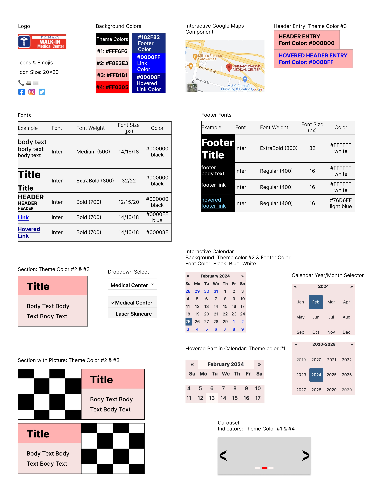

Part 1: Identifying Usability Problems
Chosen webpage: Main Page of Primary Walkin Medical Center
Link: https://primarywalkinmedical.com/
Reason: The webpage is the home page of a local urgent care center. It has lots of potential to improve, due to the usability and accessibility problems it has.
Below is the screenshot of the webpage. The black header will stay on the top of screen no matter how we scroll down the webpage, so in the full-size screenshot below, it's near the bottom.

Usability Problems
- Efficiency: The address and the map are seperated on the web page. For people who are looking for the location of the medical center, it takes more time for them to scroll down to find the map.
- Efficiency: The hours of medical center and laser skincare are one type of information and can be merged into one component. Currently, they are seperate and cost users more time.
- Attractiveness: The left bottom half of the web page is largely blank, causing a sense of asymmetry for users.
- Learnability: All page links available for the website is listed in "Pages" section in right bottom corner of this page. Usually, the links are put in footer for reference. Location of this section makes it difficult for users to get used to. Also, with the headers in the top of webpage, the "Pages" section provides repetitive information and is not very important. It's better to put this in footer area of the webpage instead of put it in main body of the webpage.
- Memorability, Learnability: Lack of icons in the page makes users difficult to remember different types of contact information. Users need to read all the text to find the information they want.
- Understandability: The names of links in "Pages" section are confusing. For example, it makes no sense why "Primary laser skincare" and "Primary laser skincare pricing" are two separate links. "Primary laser skincare pricing" could be merged into "Primary laser skincare". Also, name of "Forms" link has only one word and does not provide more information about the forms. It can be removed as well, since it's already in the header.
Accessibility Problems
- Some picture lack alt texts.
- The grey text is difficult to see with white background behind.
- Most text are made of capital letters, making it difficult to read.
All those problems make the web page poorly accessible for both manual users and users with disability.
Part 2: Visual Redesign
Sketches
Speed sketches
Final Sketch
Low-Fidelity Wireframes
Desktop Screen
Tablet Screen
Mobile Screen
Style Guide

High-Fidelity Mockup
Desktop Screen